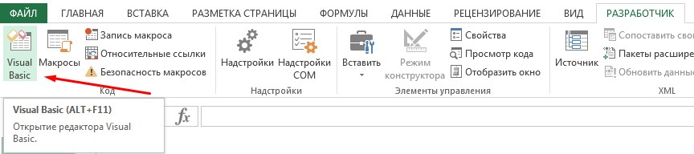
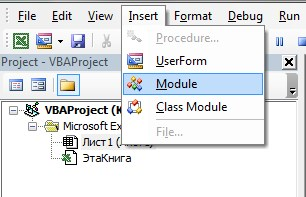
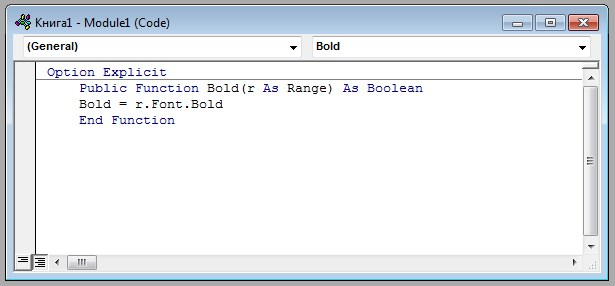
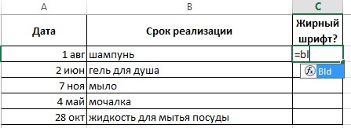
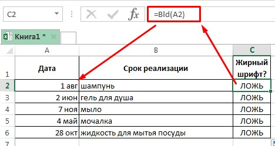
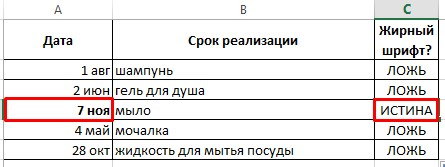

Есть ли жирный шрифт в ячейке
Простая задача: есть таблица в excel, в нескольких ячейках которой текст выделен жирным. Нам нужно найти все ячейки с жирным шрифтом так, чтобы можно было отфильтровать, выделить все ячейки такого рода цветом, при этом сделать все максимально быстро. На помощь приходит пользовательская функция, созданная средствами VBA.
Чтобы создать такую функцию, необходимо прописать ее код в модуль VBA. Для этого во вкладке "Разработчик" заходим в 'Visual Basic'
В рабочей области VBA заходим в меню 'Insert' → 'Modules'.
Справа в новом окне вставляем код для нашей будущей формулы.
Option Explicit
Public Function Bld(r As Range) As Boolean
Bld = r.Font.Bold
End Function
*Код выше означает следующее: создается публичная функция (название "Bld" можете заменить на свое). Принимает значение ИСТИНА или ЛОЖЬ. И функция ищет жирный шрифт.
После того, как вставили код, можно выходить из разработчика. Время проверить работоспособность нашей функции. Открываем/создаем таблицу с любыми данными. В пустую ячейку в конце таблицы вводим функцию =Bld(номер ячейки). Если Вы меняли название функции, соответственно, вводите название вашей функции.
Если в искомой ячейке шрифт обычный, то функция вернет ЛОЖЬ.
Если шрифт жирный - ИСТИНА.
Важно!
Формула не делает перерасчет автоматически. То есть, если Вы в готовом шаблоне поменяете в ячейке обычный шрифт на жирный, в ячейке с формулой "ложь" не изменится на "истину". Есть быстрый способ перерасчета таких функций: комбинация клавиш Ctrl + Alt + F9. Всегда советую привыкать к комбинациям клавиш, горячим клавишам. Это очень продуктивно сказывается на скорости работы.
Посмотреть процесс на видео:Опубликовано: